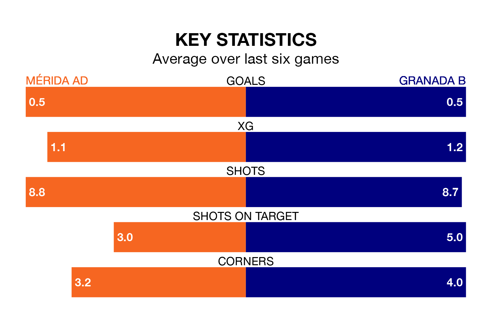

Sunday's late match at the Estadio Romano sees two relegation candidates play each other, as 18th-ranked Mérida AD host bottom of the table Granada B.
Mérida AD have picked up 13 points from their first 13 Primera Division RFEF Group 2 games, with three wins and four draws.
That is three points more than Granada B have collected, having won two and drawn four.
Mérida AD are in disappointing form in Primera Division RFEF Group 2, with one win and two draws from their last six games.
With no wins and a draw over that period, Granada B's form is worse – they have taken one point from 18, compared to the home side's five.
With 11 goals in 18 games so far this season, the visitors are the league's second-lowest scorers with 0.6 goals per game. And they are conceding more than average, letting in 30 goals at a rate of 1.7 per game.
Mérida AD are also below average scorers, with 0.7 goals per game, compared to a league average of 1.2. They have conceded 1.3 goals per game.
Mérida AD's last match was on January 3, a 1-0 loss against CD Alcoyano.
Granada B lost 1-0 against UD Melilla last time out, on January 4.
Updated: 10:50, 10/01/24